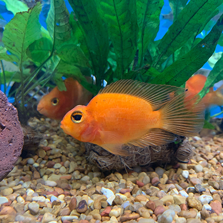
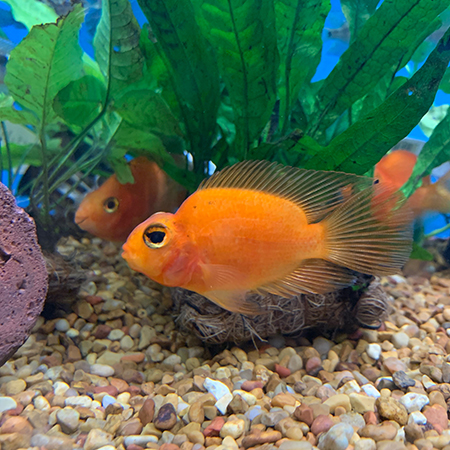

Week 6
Part I: Central Park Zoo Visit

During my visit at the Central Park Zoo, I decided to observe the Cotton-top Tamarin. The Cotton-Top Tamarins are small New World Monkey that weigh less than 0.5kg. The Cotton-Top Tamarin are currently classified as "critically endangered" by the IUCN. The Cotton-Top Tamarins have a very clear dominance hierarchy: only the dominant pairs breed. They also displays a high level of cooperative care, as well as altruistic and spiteful behaviours. In addition, studies show that there exists grammatical structure in terms of their communication.
Ethogram on the Cotton-Top Tamarin

Homoculus Diagram
During my observation, I noticed the tamarins uses their hands, feet and mouth very often. I'm assuming their tails are used for balance purposes, however it is hard to confirm from this observation solely. Below is the Homoculus Diagram I created based on this specific observation.

I was lucky enough to witness the train session while I was at the zoo. Here is a short clip of how the Cotton-Top Tamarins intereact with thier keeper, and how the keeper trains them with treats.
Part II: Local Pet Store, Animal Shelter and Hospital visit
During this observation my partner Yating and I visted a pet store: Petco, two animal shelter:Animal Haven and Best Friends Pet Adoption Center, and one animal hospital :Tribeca Soho Animal Hospital.
 
